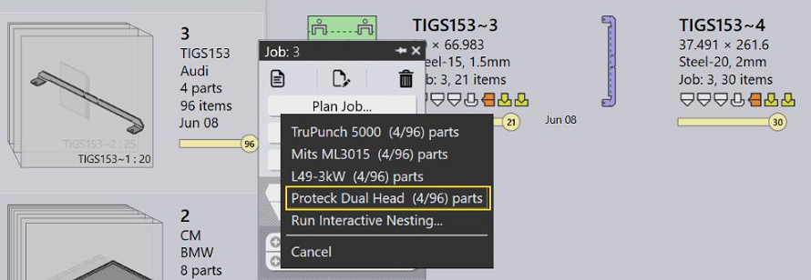
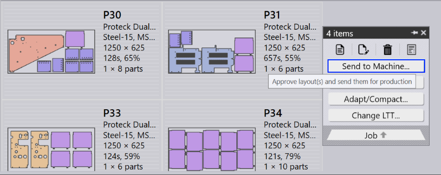
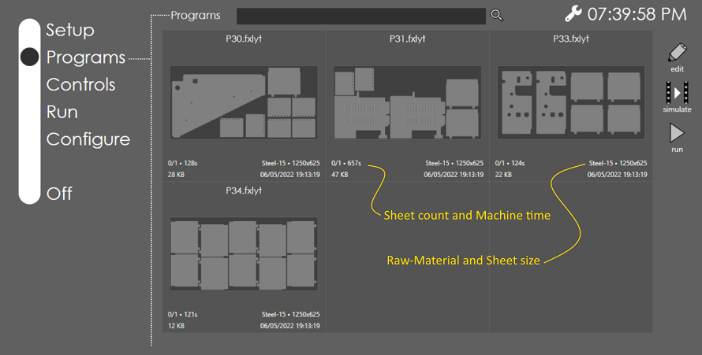
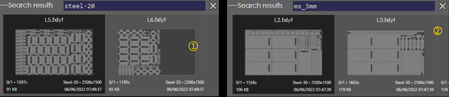
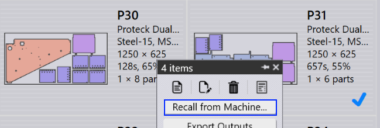

● Launch Praxis and Vulcan. Switch to Praxis and import Job spreadsheets from the C:\Program Files\Metamation\Praxis\Samples\Jobs folder. (Or load some parts and create new Job from the part library).
● Select a job, right click, and use the Plan Job panel command. Select a bend machine.
● Repeat Plan Job (previous step) and select Proteck Dual Head machine from the menu.

Nests start appearing after a few seconds. Right click and use Send to Machine… command to send the layouts to Vulcan.

Launch Vulcan and switch to Programs page. It lists programs to run in Proteck Dual Head queue. The program tiles display job details like sheets to run, estimated machine-time-per-sheet, Praxis raw-materials etc.

The program list is updated as layouts are sent/recalled from Praxis. Programs are automatically refreshed when layouts are edited in Praxis.
Use the search box to search the programs by name, raw-material or LTT table. The examples below show results of programs searched by

● Switch to Praxis Job page or go to the nests tab.
● Select one or more layouts, right click, and use the Recall from Machine… panel command to remove the layouts from the production queue.

● The Vulcan program list is automatically updated with the updated queue.